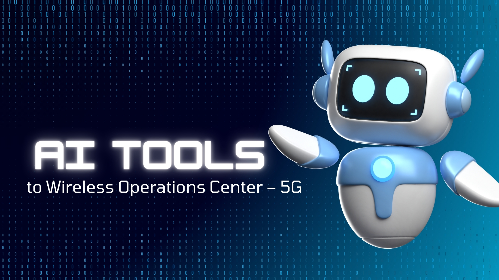
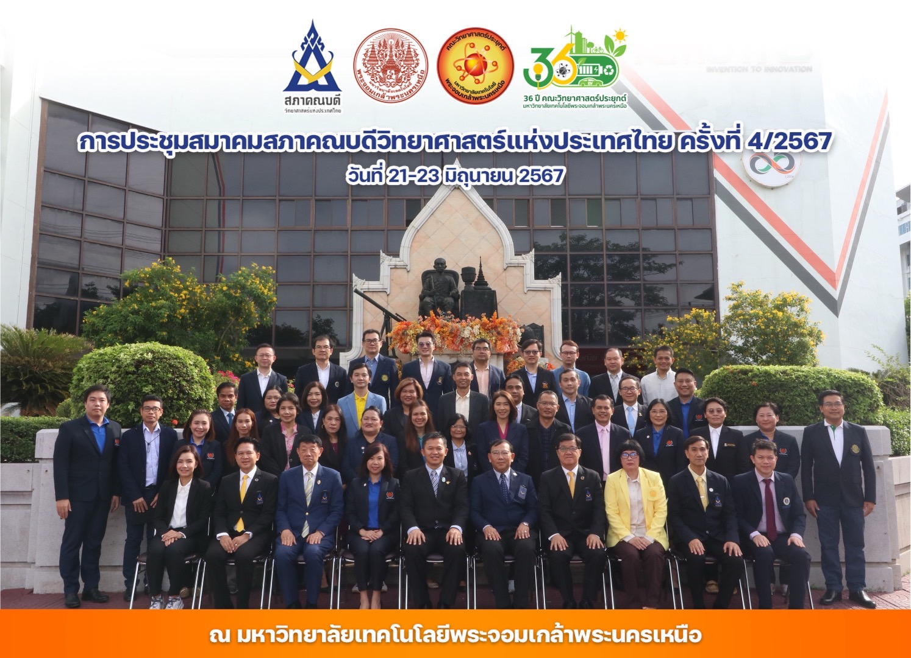
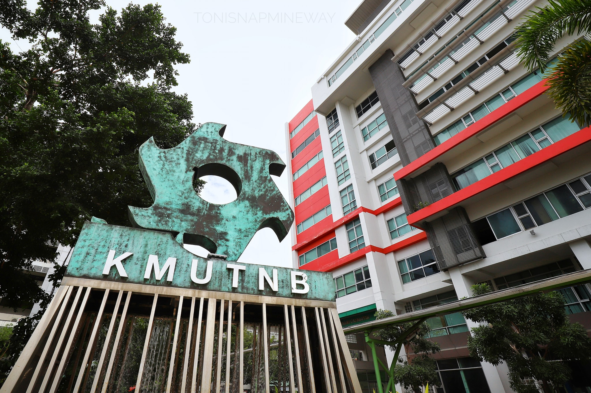

เกี่ยวกับ
รู้จัก มจพ.
การบริหาร
อัตลักษณ์
Green university
มจพ.ไปได้ไกล
Sustainability
ติดต่อ
บริจาค
การศึกษา
คณะและสำนักวิชาการ
วิทยาลัยและสถาบัน
หลักสูตรที่เกี่ยวข้อง
สมัครเข้าศึกษา
หน่วยงานการศึกษา
บริการนักศึกษา
วิจัยและนวัตกรรม
ศูนย์ทดสอบทางวิชาการ
ศูนย์ทดสอบทางวิชาการ
ศูนย์ทดสอบทางวิชาการ
ศูนย์ทดสอบทางวิชาการ
ศูนย์ทดสอบทางวิชาการ
ศูนย์ทดสอบทางวิชาการ
ข่าวสารความรู้
ศูนย์ทดสอบทางวิชาการ
ศูนย์ทดสอบทางวิชาการ
ศูนย์ทดสอบทางวิชาการ
ศูนย์ทดสอบทางวิชาการ
ศูนย์ทดสอบทางวิชาการ
ศูนย์ทดสอบทางวิชาการ
ร่วมงานกับเรา
ศูนย์ทดสอบทางวิชาการ
ศูนย์ทดสอบทางวิชาการ
ศูนย์ทดสอบทางวิชาการ
ศูนย์ทดสอบทางวิชาการ
ศูนย์ทดสอบทางวิชาการ
ศูนย์ทดสอบทางวิชาการ



Previous
Next
King Mongkut's University of Technology North Bangkok
การศึกษาkmutnb
เพื่อขับเคลื่อน
เป้าหมายการพัฒนาที่ยั่งยืน
มหาวิทยาลัยสีเขียว
News
Personal Info.
Email

เว็บไซต์มหาวิทยาลัย
เว็บไซต์กองกิจการนักศึกษา
ส่ง
×